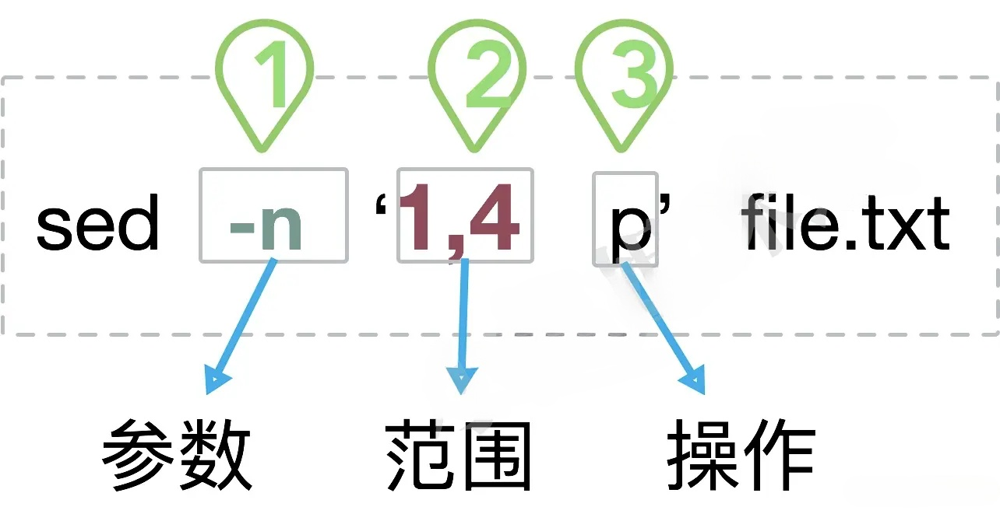
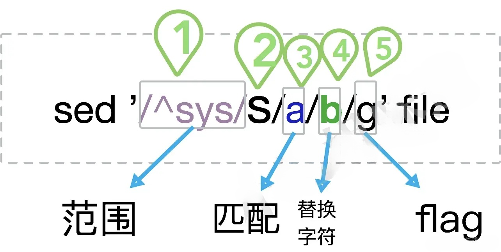

功能强大的流式文本编辑器
sed 是一种流编辑器，它是文本处理中非常重要的工具，能够完美的配合正则表达式使用，功能不同凡响。sed 是逐行读取文本的，处理时，把当前处理的行存储在临时缓冲区中，称为“模式空间”（pattern space），接着用sed命令处理缓冲区中的内容，处理完成后，把缓冲区的内容送往屏幕。接着处理下一行，这样不断重复，直到文件末尾。文件内容并没有 改变，除非你使用重定向存储输出或-i参数使执行结果更新原文件。
Sed主要用来自动编辑一个或多个文件；简化对文件的反复操作；编写转换程序等。
sed 命令是利用脚本来处理文本文件，依照脚本的指令来处理、编辑文本文件。
sed 可以对来自文件、以及标准输入的文本进行编辑。
sed命令比较适用于大的文本文件，用普通文本编辑器难以胜任的情况。
sed [-hnV] [-e<script>] [-f<script文件>] [文本文件]参数说明：
-e<script> 或 --expression=<script> 多点编辑，可以执行多个子命令, 以选项中指定的script来处理输入的文本文件。-f<script文件> 或 --file=<script文件> 以选项中指定的script文件(sed操作可以事先写入脚本，然后通过-f读取并执行）来处理输入的文本文件。动作说明：

我们先创建一个 testfile 文件，内容如下：
$ cat testfile #查看testfile 中的内容
HELLO LINUX!
Linux is a free unix-type opterating system.
This is a linux testfile!
Linux test
Google
Taobao
Runoob
Tesetfile
Wiki在 testfile 文件的第四行后添加一行，并将结果输出到标准输出，在命令行提示符下输入如下命令：
sed -e 4a\newLine testfile 使用 sed 命令后，输出结果如下：
$ sed -e 4a\newLine testfile
HELLO LINUX!
Linux is a free unix-type opterating system.
This is a linux testfile!
Linux test
newLine
Google
Taobao
Runoob
Tesetfile
Wiki1,4 表示找到文件中1,2,3,4行的内容。
这个范围的指定很有灵性，请看以下示例（请自行替换图中的范围部分）。
5 选择第5行。
2,5 选择2到5行，共4行。
1~2 表示从第一行开始，行号递增2输出，即输出奇数行，语法格式为 first~step；
2~2 选择偶数行。
2,+3 和2,5的效果是一样的，共4行。
2,$ 从第二行到文件结尾，$为最后一行的行号。
范围的选择还可以使用正则匹配。请看下面示例。
/sys/,+3 选择出现sys字样的行，以及后面的三行。
/^sys/,/mem/ 选择以sys开头的行，和出现mem字样行之间的数据。
为了直观，下面的命令一一对应上面的介绍，范围和操作之间是可以有空格的。
sed -n '5p' file
sed -n '2,5 p' file
sed -n '1~2 p' file
sed -n '2~2 p' file
sed -n '2,+3p' file
sed -n '2,$ p' file
sed -n '/sys/,+3 p' file
sed -n '/^sys/,/mem/p' file将 testfile 的内容列出并且列印行号，同时，请将第 2~5 行删除！
$ nl testfile | sed '2,5d'
1 HELLO LINUX!
6 Taobao
7 Runoob
8 Tesetfile
9 Wikised 的动作为 2,5d，那个 d 是删除的意思，因为删除了 2-5 行，所以显示的数据就没有 2-5 行了， 另外，原本应该是要下达 sed -e 才对，但没有 -e 也是可以的，同时也要注意的是， sed 后面接的动作，请务必以 '...' 两个单引号括住喔！
只要删除第 2 行：
$ nl testfile | sed '2d'
1 HELLO LINUX!
3 This is a linux testfile!
4 Linux test
5 Google
6 Taobao
7 Runoob
8 Tesetfile
9 Wiki要删除第 3 到最后一行：
$ nl testfile | sed '3,$d'
1 HELLO LINUX!
2 Linux is a free unix-type opterating system. 这两种情况很类似。插入文本使用 i 子命令，表示在指定位置前面插入文本；追加文本使用 a子命令，表示在指定位置之后插入文本。观察一下两个的区别：
在第二行后(即加在第三行) 加上drink tea? 字样：
$ nl testfile | sed '2a drink tea'
1 HELLO LINUX!
2 Linux is a free unix-type opterating system.
drink tea
3 This is a linux testfile!
4 Linux test
5 Google
6 Taobao
7 Runoob
8 Tesetfile
9 Wiki如果是要在第二行前，命令如下：
$ nl testfile | sed '2i drink tea'
1 HELLO LINUX!
drink tea
2 Linux is a free unix-type opterating system.
3 This is a linux testfile!
4 Linux test
5 Google
6 Taobao
7 Runoob
8 Tesetfile
9 Wiki如果是要增加两行以上，在第二行后面加入两行字，例如 Drink tea or ..... 与 drink beer?
$ nl testfile | sed '2a Drink tea or ......\
drink beer ?'
1 HELLO LINUX!
2 Linux is a free unix-type opterating system.
Drink tea or ......
drink beer ?
3 This is a linux testfile!
4 Linux test
5 Google
6 Taobao
7 Runoob
8 Tesetfile
9 Wiki每一行之间都必须要以反斜杠 \ 来进行新行标记。上面的例子中，我们可以发现在第一行的最后面就有 \ 存在。
将第 2-5 行的内容取代成为 No 2-5 number 呢？
$ nl testfile | sed '2,5c No 2-5 number'
1 HELLO LINUX!
No 2-5 number
6 Taobao
7 Runoob
8 Tesetfile
9 Wiki透过这个方法我们就能够将数据整行取代了。
仅打印 testfile 文件内的第 5-7 行：
$ nl testfile | sed -n '5,7p'
5 Google
6 Taobao
7 Runoobp子命令代表print，可以打印出sed缓冲区内的内容。
观察输出结果，不使用-n选项时，sed命令把1到3行输出了两次。这是因为不使用-n时，sed首先读取一行，并默认将缓冲区内的文本输出出来，之后p子命令再次输出。使用-n时，默认输出取消，只有p子命令的输出结果。
搜索 testfile 有 oo 关键字的行:
$ nl testfile | sed -n '/oo/p'
5 Google
7 Runoob如果 root 找到，除了输出所有行，还会输出匹配行。
删除 testfile 所有包含 oo 的行，其他行输出
$ nl testfile | sed '/oo/d'
1 HELLO LINUX!
2 Linux is a free unix-type opterating system.
3 This is a linux testfile!
4 Linux test
6 Taobao
8 Tesetfile
9 Wikised命令支持正则表达式定位。语法为/re/，re表示正则表达式。
搜索 testfile，找到 oo 对应的行，执行后面花括号中的一组命令，每个命令之间用分号分隔，这里把 oo 替换为 kk，再输出这行：
$ nl testfile | sed -n '/oo/{s/oo/kk/;p;q}'
5 Gkkgle将文件的2-5行写入 output.txt 文件
sed -n '2,5 w output.txt' file最后的 q 是退出。

除了整行的处理模式之外， sed 还可以用行为单位进行部分数据的查找与替换。
sed 的查找与替换的与 vi 命令类似，语法格式如下：
sed 's/要被取代的字串/新的字串/g'sed '/sys/,+3 s/a/b/g' file将 testfile 文件中每行第一次出现的 oo 用字符串 kk 替换，然后将该文件内容输出到标准输出:
sed -e 's/oo/kk/' testfileg 标识符表示全局查找替换，使 sed 对文件中所有符合的字符串都被替换，修改后内容会到标准输出，不会修改原文件：
sed -e 's/oo/kk/g' testfile选项 i 使 sed 修改文件:
sed -i 's/oo/kk/g' testfile批量操作当前目录下以 test 开头的文件：
sed -i 's/oo/kk/g' ./test*接下来我们使用 /sbin/ifconfig 查询 IP：
$ /sbin/ifconfig eth0
eth0 Link encap:Ethernet HWaddr 00:90:CC:A6:34:84
inet addr:192.168.1.100 Bcast:192.168.1.255 Mask:255.255.255.0
inet6 addr: fe80::290:ccff:fea6:3484/64 Scope:Link
UP BROADCAST RUNNING MULTICAST MTU:1500 Metric:1
.....(以下省略).....本机的 ip 是 192.168.1.100。
将 IP 前面的部分予以删除：
$ /sbin/ifconfig eth0 | grep 'inet addr' | sed 's/^.*addr://g'
192.168.1.100 Bcast:192.168.1.255 Mask:255.255.255.0接下来则是删除后续的部分，即：192.168.1.100 Bcast:192.168.1.255 Mask:255.255.255.0。
将 IP 后面的部分予以删除:
$ /sbin/ifconfig eth0 | grep 'inet addr' | sed 's/^.*addr://g' | sed 's/Bcast.*$//g'
192.168.1.100一条 sed 命令，删除 testfile 第三行到末尾的数据，并把 HELLO 替换为 RUNOOB :
$ nl testfile | sed -e '3,$d' -e 's/HELLO/RUNOOB/'
1 RUNOOB LINUX!
2 Linux is a free unix-type opterating system. -e 表示多点编辑，第一个编辑命令删除 testfile 第三行到末尾的数据，第二条命令搜索 HELLO 替换为 RUNOOB。
sed 可以直接修改文件的内容，不必使用管道命令或数据流重导向！ 不过，由于这个动作会直接修改到原始的文件，所以请你千万不要随便拿系统配置来测试！ 我们还是使用文件 regular_express.txt 文件来测试看看吧！
regular_express.txt 文件内容如下：
$ cat regular_express.txt
runoob.
google.
taobao.
facebook.
zhihu-
weibo-利用 sed 将 regular_express.txt 内每一行结尾若为 . 则换成 !
$ sed -i 's/\.$/\!/g' regular_express.txt
$ cat regular_express.txt
runoob!
google!
taobao!
facebook!
zhihu-
weibo-:q:q
利用 sed 直接在 regular_express.txt 最后一行加入 # This is a test:
$ sed -i '$a # This is a test' regular_express.txt
$ cat regular_express.txt
runoob!
google!
taobao!
facebook!
zhihu-
weibo-
# This is a test由於 $ 代表的是最后一行，而 a 的动作是新增，因此该文件最后新增 # This is a test！
sed 的 -i 选项可以直接修改文件内容，这功能非常有帮助！举例来说，如果你有一个 100 万行的文件，你要在第 100 行加某些文字，此时使用 vim 可能会疯掉！因为文件太大了！那怎办？就利用 sed 啊！透过 sed 直接修改/取代的功能，你甚至不需要使用 vim 去修订！
# 输出长度不小于50个字符的行
sed -n '/^.{50}/p'
# 统计文件中有每个单词出现了多少次
sed 's/ /\n/g' file | sort | uniq -c
# 查找目录中的py文件，删掉所有行级注释
find ./ -name "*.py" | xargs sed -i.bak '/^[ ]*#/d'
# 查看第5-7行和10-13行
sed -n -e '5,7p' -e '10,13p' file